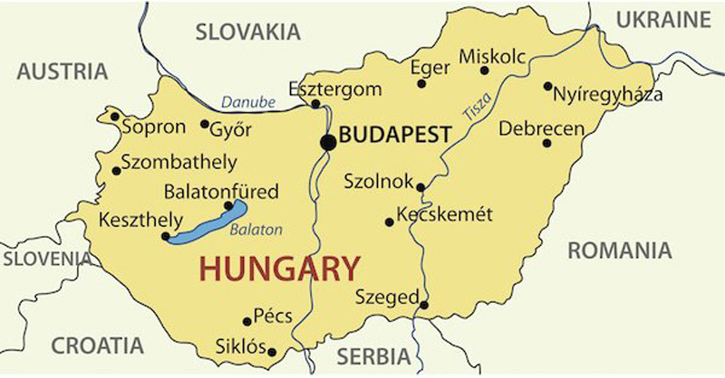
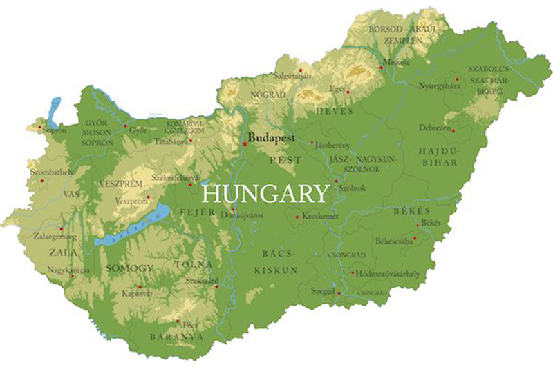
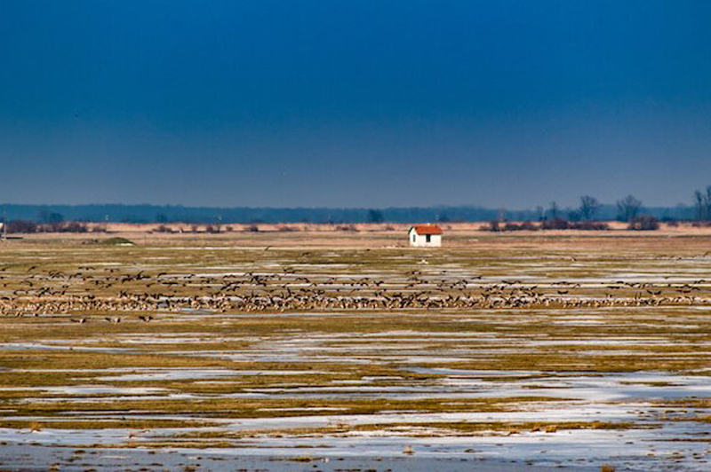
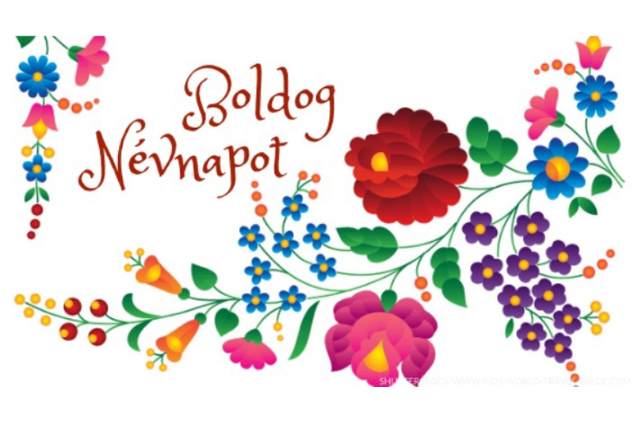

21/04/2022 5309
Sơ lược về Hungary
Thủ đô : Budapest với 1,7 triệu dân
Ngôn ngữ : Hungary
Trình độ văn hóa : Hơn 99% có thể đọc và viết.
Tôn giáo : Chủ yếu là người theo đạo Thiên chúa (Công giáo La mã 37%)
Tiền tệ : Forint
Quốc ca: Himnusz (Thánh ca liên bang)
Biểu tượng quốc gia : Đỏ, trắng và xanh lá cây (Màu quốc gia), Vương miện thánh của Hungary (Vương miện của Thánh Stephen)
Ngày quốc khánh : 20 tháng 8 (Ngày thánh Stephen)
Lịch sử : Các bộ lạc Magyar định cư sớm nhất vào thế kỷ thứ 9 sau Công nguyên trong khu vực. Vương quốc Hungary được thành lập bởi Stephen I vào năm 1000. Người Mông Cổ và người Ottoman đã xâm chiếm đất nước trong nhiều thế kỷ. Hungary là một phần của Đế chế Habsburg từ đầu thế kỷ 18 đến Chiến tranh thế giới thứ nhất. Khi quốc gia này tuyên bố độc lập trở lại như một nước cộng hòa sau chiến tranh và với Hiệp ước Hòa bình Trianon năm 1920, biên giới của đất nước đã được thiết kế lại. Sau khi Thế chiến II kết thúc, đất nước trở thành cộng sản. Năm 1956, người dân Hungary bắt đầu một cuộc cách mạng chống lại chế độ chuyên chế. Cách mạng kết thúc với việc chế độ Cộng sản giành được quyền kiểm soát trở lại - một lần nữa được Liên Xô ủng hộ và hậu thuẫn. Vào ngày 23 tháng 10 năm 1989, chế độ cộng sản Hungary sụp đổ và cuộc bầu cử dân chủ đầu tiên diễn ra vào năm 1990.
Vị trí địa lý
Hungary ở đâu? Hungary là một quốc gia không giáp biển ở Châu Âu và là một quốc gia thành viên của EU.
Hungary là một trong số ít quốc gia không giáp biển ở Trung Âu - cùng với Áo, Thụy Sĩ và Luxembourg.
Hungary có chung biên giới với bảy quốc gia: Slovakia, Ukraine, Romania, Serbia, Croatia và Slovenia và Áo.

Bản đồ vị trí Hungary và các quốc gia láng giềng
Biên giới dài nhất được chia sẻ với Slovakia và có chiều dài khoảng 627 km / 389 dặm.
Hungary là một quốc gia chủ yếu bằng phẳng với các đồng bằng, được gọi là Puszta, ở phần phía đông và phần phía nam, các ngọn đồi và núi dọc theo biên giới Slovakia và ở phần phía Tây.

Bản đồ địa lý Hungary
Hungary có thể được so sánh về quy mô với bang Indiana của Hoa Kỳ.
Đất nước này chủ yếu có khí hậu lục địa với mùa hè ấm áp và mùa đông lạnh giá.
Địa điểm nổi tiếng
Thủ đô của Hungary là Budapest, đây cũng là thành phố lớn nhất ở Hungary với 1,7 triệu dân. Budapest nằm ở hai bên sông Danube và có ba phần, được phát triển qua nhiều thế kỷ từ ba thành phố: Buda, Pest và Óbuda.

Tòa nhà Quốc hội Hungary
Danube là con sông dài thứ hai của Hungary. Con sông dài nhất ở Hungary là Tisza. Nó đi qua Hungary với chiều dài 966 km / 600 dặm trên đường từ Ukraine đến Serbia. Sông Tisza chảy qua vùng đồng bằng lớn của Hungary và thành phố lớn thứ ba của Hungary là Szeged.
Sông Tisza
Ngọn núi cao nhất ở Hungary là 'Kekes' với độ cao 1.014 m / 3.326 ft.
Hồ lớn nhất ở Hungary là Hồ Balaton. Hồ nổi tiếng với những người đam mê thể thao dưới nước và lướt sóng.
Hồ Balaton
Hungary có nhiều suối nước nóng. Hồ Héviz gần Hồ Balaton là hồ nước nóng lớn nhất trên thế giới. Nước nóng được sử dụng nhiều cho các spa và phòng tắm công cộng ở Hungary. Có khoảng 1.500 suối nước nóng và hơn 400 nhà tắm công cộng trong cả nước. Széchenyi Baths ở Budapest là khu phức hợp bồn tắm spa lớn nhất ở châu Âu.
Tắm nước nóng ở Bundapest
Danh lam thắng cảnh
Lâu đài tại Bundapest
-
Budapest : Thành phố đô thị nằm dọc theo sông Danube. Quốc hội Hungary nằm ở khu vực thương mại thấp hơn của thành phố có tên là Pest . Tại đây, du khách sẽ tìm thấy khu thương mại chính, các bảo tàng và Quảng trường Anh hùng cũng như khu Phố Thời trang nổi tiếng với tất cả các trung tâm mua sắm. Ở phía bên kia của sông Danube, bạn sẽ tìm thấy Óbuda, bao gồm một khu giải trí nổi tiếng với các cửa hàng nhỏ, quán cà phê và quán bar và tàn tích cổ của một giảng đường La Mã tại Aquincum . Phần Buda bao gồm lâu đài, nhà thờ và tháp Fisherman's Bastion tuyệt đẹp.
Budapest Fisherman's Bastion
-
Hortobágy Puszta : Đây là một trong tám di sản thế giới được UNESCO công nhận của Hungary. Các vùng đồng bằng rộng lớn được bao phủ bởi các vùng đầm lầy, đồng cỏ và các khu chăn thả cừu và gia súc. Mùa chăn thả kéo dài từ tháng 4 đến tháng 10 sau đó vùng đồng bằng bị bỏ hoang. Chim sơn ca, cú, én và sếu là những loài chim thường thấy nhất ở các vùng đầm lầy. Sếu là biểu tượng của công viên và một trung tâm du khách thông báo về 15 loài sếu khác nhau.

Đồng bằng rộng lớn ở miền Đông Hungary
-
Debrecen : Thành phố lớn thứ hai của Hungary được biết đến với trường đại học. Đây là trường đại học lâu đời nhất của Hungary và đã hoạt động như một tổ chức giáo dục đại học từ năm 1538.
Trường đại học Debrecen
-
Esztergom : Thành phố phía trên sông Danube ở phía tây Hungary này là nơi có nhà thờ lớn nhất ở Hungary và là trụ sở của nhà thờ Công giáo ở Hungary. Vương cung thánh đường Esztergom được biết đến rộng rãi với bệ thờ khổng lồ, đây là bức tranh lớn nhất thế giới trên một tấm vải. Bức tranh mô tả Sự tích Đức Mẹ Đồng Trinh Maria.
Vương cung thánh đường Esztergom
-
Pécs : Thành phố nhỏ ở miền Nam Hungary được biết đến với quảng trường chính có tên là Széchenyi Ter, độc đáo ở chỗ tòa nhà trung tâm của nó là một nhà thờ Hồi giáo bắt nguồn từ cuộc chinh phục của Ottoman vào thế kỷ 16. Nhà thờ Hồi giáo này đã được chuyển đổi thành một nhà thờ vào năm 1702 khi quân đội Habsburg-Hungary tái chiếm thành phố. Nhà thờ Hồi giáo này là một trong những công trình kiến trúc lớn nhất và quan trọng của Thổ Nhĩ Kỳ còn sót lại trên đất nước.
Quảng trường thành phố chính Pécs
-
Eger : Thành phố thời trung cổ này cũng có nhà thờ lớn thứ ba ở Hungary - sau Vương cung thánh đường Esztergom và Nhà thờ Matthias ở Budapest. Lâu đài Eger có từ thế kỷ 13. Vương cung thánh đường Eger được xây dựng vào những năm 1830.
Vương cung thánh đường Eger
Đặc điểm phân bố dân cư
Khoảng 70% người dân ở Hungary sống ở các trung tâm đô thị. Dân cư phân bố khá đồng đều trên cả nước.
Các thành phố lớn nhất ở Hungary là Budapest, Debrecen, Szeged, Miskolc và Pecs. Budapest là thành phố duy nhất có hơn 1 triệu dân, tất cả các thành phố khác chỉ có dưới 300.000 dân.

Boldog Nesvnapot có nghĩ là Ngày tên hạnh phúc
Ở Hungary có phong tục kỷ niệm ngày tên (névnapot) và ngày sinh của một người. Ngày đặt tên dựa trên truyền thống tôn giáo và các nhân vật và sự kiện lịch sử.
Ví dụ, ngày 29 tháng 6 là Ngày của Thánh Peter và Thánh Paul, do đó vào ngày này những người có tên là Péter hoặc Pál sẽ được tổ chức.
Bạn có biết rằng khối lập phương ma thuật (hoặc khối Rubik) và bút bi được phát minh bởi người Hungary?
Ngôn ngữ Hungary
Tiếng Hungary là ngôn ngữ đầu tiên chính thức và được sử dụng nhiều nhất ở Hungary. Có một số ngôn ngữ thiểu số được sử dụng bao gồm tiếng Đức, tiếng Serbia, tiếng Romania, tiếng Slovak và tiếng Slovenia. Tiếng Hungary là một ngôn ngữ Uralic, và không liên quan đến bất kỳ ngôn ngữ châu Âu nào ngoại trừ mối quan hệ xa với các ngôn ngữ Uralic khác là Phần Lan và Estonian.
Hầu hết các từ gốc có nguồn gốc từ ngôn ngữ Uralic (21%), Slavic (20%) và Đức (11%).
Hệ thống chữ viết Hungary được thành lập dưới triều đại Stephen I với bảng chữ cái Latinh và cách viết từ trái sang phải. Trước năm 1000, chữ rune Hungary cổ đã được sử dụng và chữ viết từ phải sang trái!
Đây là một số từ tiếng Hungary dành cho bạn:
-
igen ! có nghĩa là có
-
nem ! có nghĩa là không!
-
Mennyi? nghĩa là bao nhiêu?
-
Köszönöm! có nghĩa là Cảm ơn bạn!
-
Szeretlek! Nghĩa là tôi yêu bạn!
-
Lời chào đặc trưng ở Hungary là " Szia " có nghĩa là "Xin chào".
Kinh tế Hungary
Hungary là một trong những quốc gia phát triển nhất trong các quốc gia cộng sản phương đông trước đây. Đất nước này có ngành công nghiệp sản xuất xe hơi rất phát triển với Daimler, Audi, Open và Suzuki với các cơ sở sản xuất ô tô trong nước. Các lĩnh vực điện tử và dược phẩm cũng sử dụng một số lượng lớn nhân lực.
Hungary cũng nổi tiếng với đồ gốm quý giá từ các nhà sản xuất Zsolnay và Herendt, gia vị ớt bột và khăn trải bàn thủ công và tất nhiên, gia vị ớt bột. Hungary thậm chí còn có hai bảo tàng dành cho gia vị - một ở Szeged và một ở Molnar.
Lúa mì, ngô, củ cải đường, hạt hướng dương và khoai tây là một trong những sản phẩm nông nghiệp chính của Hungary.
Cánh đồng hoa hướng dương ở Hungary
Đối tác thương mại chính của Hungary là Đức với hơn 26% cho cả xuất nhập khẩu.
Hungary là một phần của Liên minh Châu Âu từ năm 2004, tuy nhiên, nước này vẫn chưa gia nhập liên minh tiền tệ và vẫn sử dụng đồng Forint làm tiền tệ.
Ẩm thực Hungary
Các món ăn chính của Hungary bao gồm các loại thịt, chủ yếu là thịt lợn, thịt gà hoặc thịt bò cũng như các loại rau củ như khoai tây, cà rốt, hành tây và củ cải đường cũng như nhiều loại đậu. Các sản phẩm từ sữa cũng có mặt rộng rãi trong ẩm thực Hungary.
Gulyás được nhiều người coi là món ăn quốc gia của Hungary.
Các món ăn đặc sản Hungary nổi tiếng bao gồm:
-
Gulyás : Món súp thịt và rau với nước sốt cà chua và ớt bột cay này được gọi là goulash và là một trong những món ăn nổi tiếng nhất của Hungary.
Súp Gulyás ( Goulash ) truyền thống
-
Pörkölt: thịt hầm với rau củ ăn với khoai tây hoặc bánh bao
-
Palacsinta : bánh kếp mỏng, tương tự như bánh crêpe của Pháp, nhân nhiều loại nhân ngọt hoặc mặn
-
Lángos: bánh men chiên dùng với ngọt (sô cô la hoặc đường hoặc trái cây) hoặc các loại bánh mặn - như trên ảnh, ăn kèm với tỏi và pho mát
Lángos
-
Bánh Dobos : bánh bông lan nhiều lớp với nhân kem bơ sô cô la và lớp phủ caramel.
Động vật Hungary
Hungary có động vật hoang dã đa dạng. Linh miêu, chó sói và gấu là những loài đặc hữu của Hungary. Có hơn 400 loài chim và một số khu vực bảo tồn như Vườn Quốc gia Hortobágy.
Gia súc ở Hungary
Ở Hungary, bạn sẽ thấy những con gia súc dài xám, loài đặc hữu của Puszta. Cũng có thể nhìn thấy cừu, lừa, dê và ngựa ở đó. Bạn cũng có thể trải nghiệm các buổi biểu diễn của Người chăn cừu thể hiện các hoạt động chăn cừu truyền thống ở Hortobágy Puszta.
Người chăn cừu
Nếu bạn muốn tìm hiểu, có nguyện vọng muốn được học tập và làm việc tại Hungary thì hãy đăng ký liên hệ ngay với chúng tôi. Chúng tôi với nhiều chương trình đi Hungary hấp dẫn sẽ biến ước mơ của bạn trở thành hiện thực.
► Tổng hợp các đơn hàng XKLĐ Nhật Bản
► Tổng hợp các đơn hàng XKLĐ Đài Loan
► Tổng hợp các đơn hàng XKLĐ Châu Âu